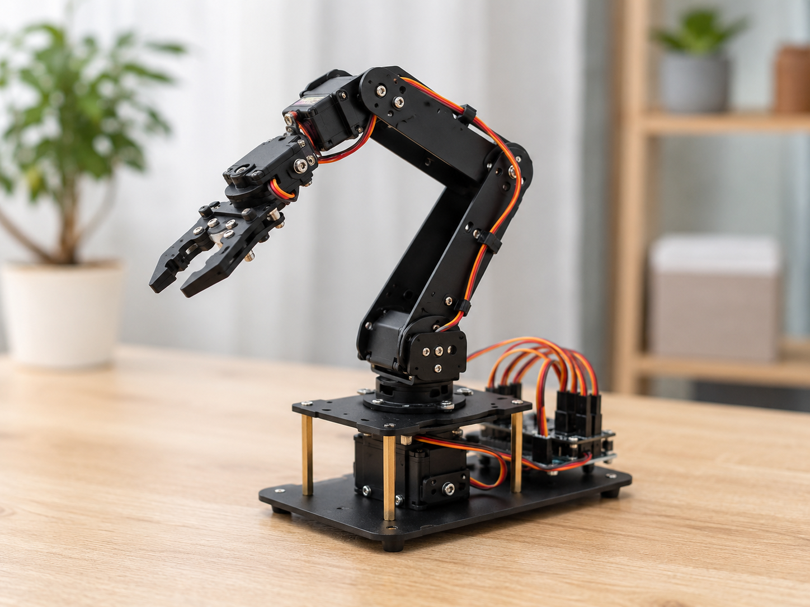

Mẫu robot
Robot dò đường
Mẫu robot sử dụng cảm biến hồng ngoại để nhận biết vạch và điều chỉnh hướng di chuyển.
Tài nguyên kỹ thuật
Tổng hợp hình ảnh mô hình, linh kiện và tài liệu tham khảo phục vụ quá trình chuẩn bị, đối chiếu và lắp ráp robot.
Mẫu robot
Mẫu robot sử dụng cảm biến hồng ngoại để nhận biết vạch và điều chỉnh hướng di chuyển.

Mẫu robot
Mẫu robot sử dụng cảm biến siêu âm để phát hiện vật cản và tự động thay đổi hướng.

Mẫu robot
Mô hình sử dụng động cơ servo để điều khiển chuyển động của các khớp và bộ kẹp.

Linh kiện
Bộ điều khiển trung tâm nhận dữ liệu cảm biến và điều khiển hoạt động của robot.

Linh kiện
Cảm biến hồng ngoại dùng để nhận biết sự khác nhau giữa vạch và nền.

Linh kiện
Cảm biến siêu âm dùng để đo khoảng cách từ robot đến vật cản.